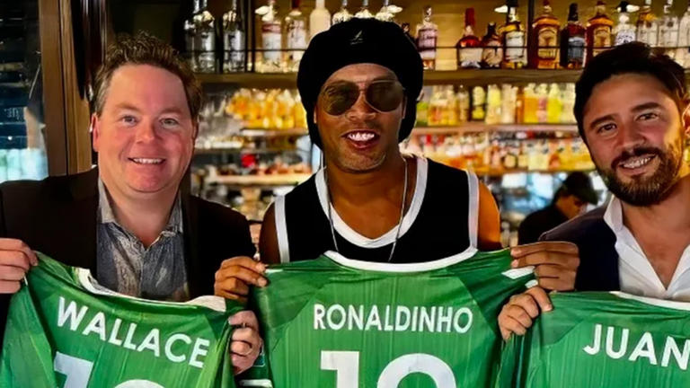

Actualités Ronaldinho
-
 La légende iconique brésilienne Ronaldinho sera présente en Martinique
La légende iconique brésilienne Ronaldinho sera présente en Martinique
- Grâce à l'application Footsider, créée par Yacine Brahimi et Ronaldinho, les clubs et les joueurs sont plus proches que jamais
-  Nouveau challenge pour Ronaldinho: la superstar brésilienne vient d'acheter un club de D3 aux États-Unis
- Ronaldinho pour un match de gala à Angers